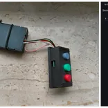
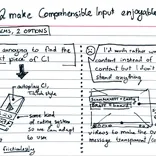
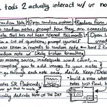
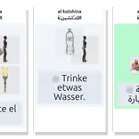
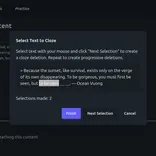

Notes by Kolja Sam:
-

required buttons for an audio-only flashcard interface -

two concepts to make comprehensible input more enjoyable - concept for initial memorization of target language phrases﹕ prompt, wait, check
-

potential tools to actually interact with your notes - peculiarities when designing a learning app for target language numbers (1-100)
-

Al Kutshina﹕ A drag-and-drop puzzle for language acquisition inspired by TPR -

gradual cloze deletion concept for memorizing verbatim quotes with interdependent flashcards